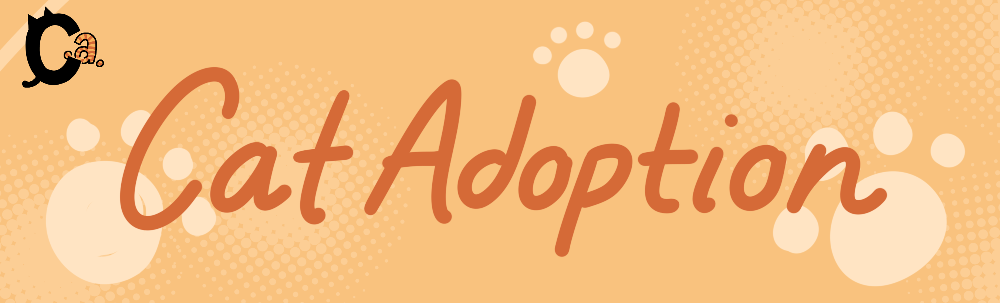
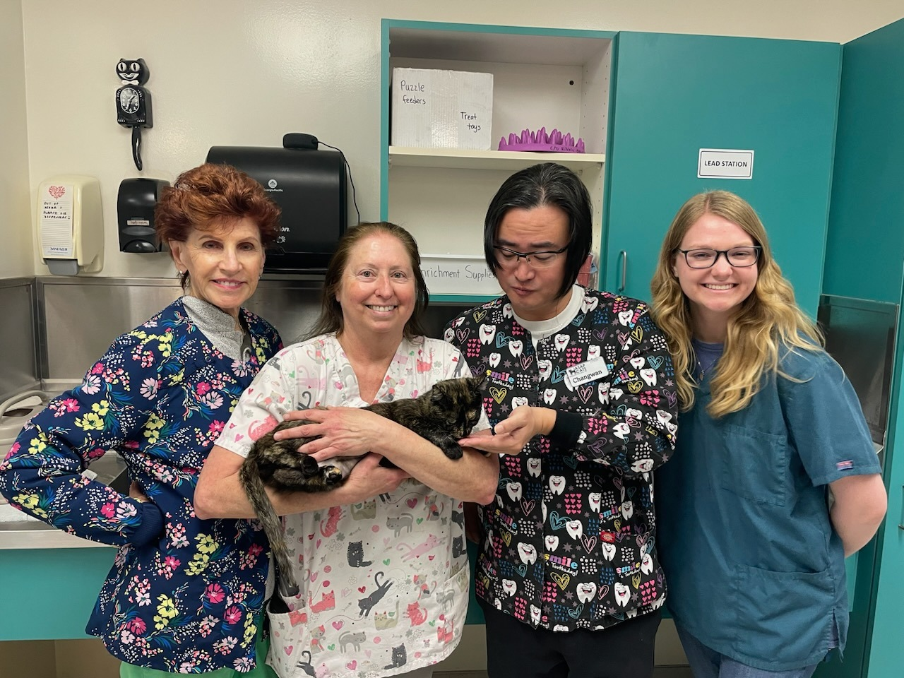

<!DOCTYPE html>
<html lang="en">
<head>
    <meta charset="UTF-8">
    <title>Title</title>
</head>
<body>
</body>
</html><!DOCTYPE html>
<html lang="en">
<head>
    <meta charset="UTF-8">
    <meta name="viewport" content="width=device-width, initial-scale=1.0">
    <title>About Us - Cat Adoption</title>
    <link rel="stylesheet" href="css/styles.css">
</head>
<body>
<header>
    
    
</header>
<nav>
    <ul>
        <li><a href="index.html">Home</a></li>
        <li><a href="about.html">About</a></li>
        <li><a href="volunteers.html">Volunteers</a></li>
    </ul>
</nav>
<main>
    <h1>About Us</h1>
        <p>We are dedicated to finding loving homes for cats in need. Our mission is to help all cats alike find their perfect home.
        <p>
        <p>If you would like to contact us, you can do so within our <a href="volunteers.html">Volunteers</a> page.
        <p>For contacting us regarding adoption, please visit us in-person so we may help you with that.
        </p>
    <h1>Upcoming Events</h1>
        <h2>October Fall Cafe</h2>
            <h3><i>Begins October 1st at 3PM EST</i></h3>
                <p>Join us as we transform The Cat Adoption into a fall cafe! Similar to cat-cafes, we will provide packaged foods to all
                Cat Adoption donators and adoptees. Please visit <a href="volunteers.html">Volunteers</a> page if you are interested in volunteering.
                </p>
        <h2>November Turkey Time</h2>
            <h3><i>Begins November 3rd at 1:30PM EST</i></h3>
                <p>Join us for the November Turkey Time, as we prepare for Thanksgiving! All cats at The Cat Adoption will have the chance to get
                their paws on real turkey! Volunteers and potential adoptees are able to feed cats real turkey (each cats get a small portion once a day!)
                So come early, if you'd like to feed your favorite cat some real turkey!
                </p>
    

</main>
<footer>
    <a href="index.html">Home</a> | <a href="volunteers.html">Volunteers</a>
</footer>
</body>
</html>